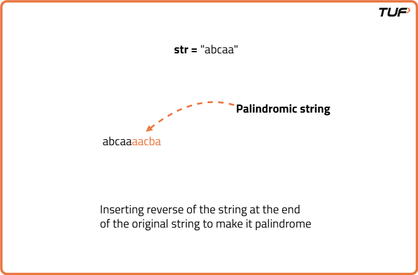
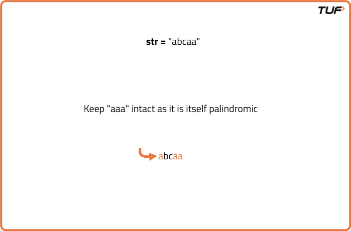
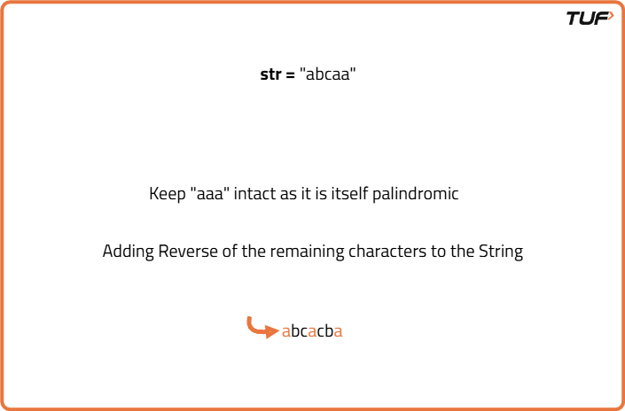

Minimum insertions to make string palindrome | DP-29
Problem Statement: Given a string s, find the minimum number of insertions needed to make it a palindrome. A palindrome is a sequence that reads the same backward as forward. You can insert characters at any position in the string.
Pre-req: Longest Common Subsequence, Longest Palindromic Subsequence.
Examples
Input: s = "abcaa" Output: 2 Explanation: Insert 2 characters "c", and "b" to make "abcacba", which is a palindrome. Input : s = "ba" Output: 1 Explanation : Insert "a" at the beginning to make "aba", which is a palindrome.
Disclaimer: Here is the practice link to help you assess your knowledge better. It's highly recommend trying to solve it before looking at the solution.
Tabulation Approach
Algorithm
We need to find the minimum insertions required to make a string palindrome. Let us keep the 'minimum' criteria aside and think, how can we make any given string palindrome by inserting characters?
The easiest way is to add the reverse of the string at the back of the original string as shown below. This will make any string palindrome.
Minimum Insertion required = n(length of the string) - length of longest palindromic subsequence.
The easiest way is to add the reverse of the string at the back of the original string as shown below. This will make any string palindrome.

Here the number of characters inserted will be equal to n (length of the string). This is the maximum number of characters we can insert to make strings palindrome. To minimize the insertions, we will first try to refrain from adding those characters again which are already making the given string palindrome. For the given example, “aaa”, “aba”,”aca”, any of these are themselves palindromic components of the string. We can take any of them( as all are of equal length) and keep them intact.
Now, there are two characters(‘b’ and ‘c’) remaining which prevent the string from being a palindrome. We can reverse their order and add them to the string to make the entire string palindrome.
In order to minimize the insertions, we need to find the length of the longest palindromic component or in other words, the longest palindromic subsequence.Minimum Insertion required = n(length of the string) - length of longest palindromic subsequence.
Code
#include <bits/stdc++.h>
using namespace std;
// Define a class named Solution
class Solution {
public:
// Function to calculate Longest Common Subsequence
int lcs(string s1, string s2) {
// Get sizes of both strings
int n = s1.size();
int m = s2.size();
// Create a dp table of size (n+1) x (m+1)
vector<vector<int>> dp(n + 1, vector<int>(m + 1, -1));
// Initialize first row as 0
for (int i = 0; i <= n; i++) {
dp[i][0] = 0;
}
// Initialize first column as 0
for (int i = 0; i <= m; i++) {
dp[0][i] = 0;
}
// Fill dp table using bottom-up approach
for (int ind1 = 1; ind1 <= n; ind1++) {
for (int ind2 = 1; ind2 <= m; ind2++) {
// If characters match, add 1 to previous diagonal
if (s1[ind1 - 1] == s2[ind2 - 1])
dp[ind1][ind2] =
1 + dp[ind1 - 1][ind2 - 1];
// Else take max from top or left
else
dp[ind1][ind2] =
max(dp[ind1 - 1][ind2],
dp[ind1][ind2 - 1]);
}
}
// Return bottom-right value
return dp[n][m];
}
// Function to find length of Longest Palindromic Subsequence
int longestPalindromeSubsequence(string s) {
// Reverse the string
string t = s;
reverse(s.begin(), s.end());
// LCS of s and its reverse is the LPS
return lcs(s, t);
}
// Function to find min insertions to make string a palindrome
int minInsertion(string s) {
// Get length of input string
int n = s.size();
// Get length of longest palindromic subsequence
int k = longestPalindromeSubsequence(s);
// Return total - palindromic length
return n - k;
}
};
// Main function
int main() {
// Create object of Solution class
Solution obj;
// Input string
string s = "abcaa";
// Call minInsertion and print result
cout << "The Minimum insertions required to make string palindrome: "
<< obj.minInsertion(s);
return 0;
}
Complexity Analysis
Time Complexity: O(N*N), we fill the entire DP array of size N*N one by one.Space Complexity: O(N*N), additional space used to store DP array.
Space Optimized Approach
Algorithm
If we look closely, we are essentially using only two rows in our DP table: dp[ind-1][ ] and dp[ind][ ].
This means we don’t need to maintain the entire 2D array. Instead, we can optimize space by using two 1D arrays — prev and cur, where prev represents dp[ind-1] and cur represents dp[ind].
We can simply replace all instances of dp[ind-1] with prev, and dp[ind] with cur. After completing each inner iteration, we can update prev = cur so that the current row becomes the previous row for the next step.
This means we don’t need to maintain the entire 2D array. Instead, we can optimize space by using two 1D arrays — prev and cur, where prev represents dp[ind-1] and cur represents dp[ind].
We can simply replace all instances of dp[ind-1] with prev, and dp[ind] with cur. After completing each inner iteration, we can update prev = cur so that the current row becomes the previous row for the next step.
Code
#include <bits/stdc++.h>
using namespace std;
class Solution {
public:
// Function to compute LCS using 2-row DP
int lcs(string s1, string s2) {
// Get sizes
int n = s1.size();
int m = s2.size();
// Initialize prev and cur rows
vector<int> prev(m + 1, 0), cur(m + 1, 0);
// Fill rows
for (int ind1 = 1; ind1 <= n; ind1++) {
for (int ind2 = 1; ind2 <= m; ind2++) {
// If characters match
if (s1[ind1 - 1] == s2[ind2 - 1])
cur[ind2] = 1 + prev[ind2 - 1];
// Else take max from prev row or left
else
cur[ind2] = max(prev[ind2], cur[ind2 - 1]);
}
// Move cur to prev
prev = cur;
}
// Return result
return prev[m];
}
// Function to compute LPS
int longestPalindromeSubsequence(string s) {
string t = s;
reverse(t.begin(), t.end());
return lcs(s, t);
}
// Function to compute min insertions
int minInsertion(string s) {
int n = s.size();
int k = longestPalindromeSubsequence(s);
return n - k;
}
};
int main() {
Solution sol;
string s = "abcaa";
cout << "The Minimum insertions required to make string palindrome: "
<< sol.minInsertion(s) << endl;
return 0;
}Complexity Analysis
Time Complexity: O(N*N), we fill the entire DP array of size N*N one by one.Space Complexity: O(N), we are using an external array of size ‘N+1’ to store only two rows.